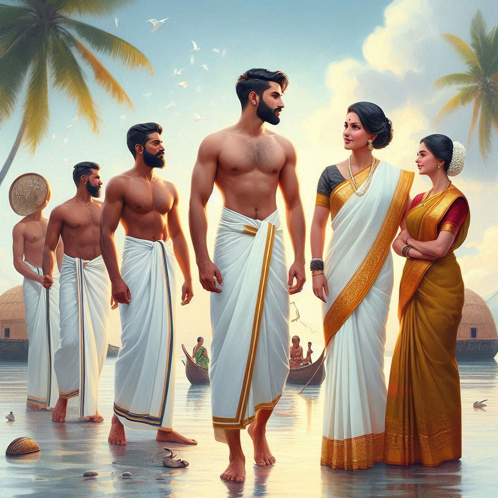
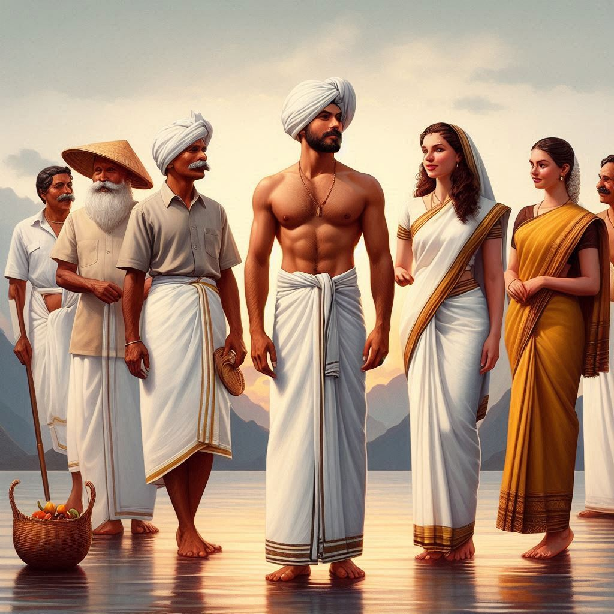

The traditional dress of Lakshadweep is heavily influenced by its Islamic culture, as well as the region's tropical environment. The clothing reflects both modesty and comfort, suitable for the warm and humid climate. Here's an overview of the typical dress worn by both men and women in Lakshadweep:
Men's Dress
- Lungi or Sarong: The traditional attire for men in Lakshadweep is the lungi or sarong, a piece of cloth wrapped around the waist, providing comfort and freedom of movement in the warm climate.
- Shirt or Kurta: Men often wear a shirt or kurta on top. In formal settings or for religious and festive occasions, a kurta is worn, typically made from cotton for comfort in the heat.
- Taqiyah: Men often wear a small white cap called a taqiyah, especially during prayers or religious festivals.
- Sherwani or Pathani Suit: For formal occasions or special ceremonies, men may wear more elaborate outfits like a Sherwani (long coat-like garment) or a Pathani suit.
Women's Dress
- Salwar Kameez: The most common attire for women in Lakshadweep is the salwar kameez, consisting of a long tunic (kameez) paired with loose pants (salwar). This outfit is practical and comfortable for the tropical climate.
- Headscarf (Dupatta): Women wear a dupatta (scarf) to cover their heads, aligning with Islamic traditions of modesty. It is often draped over the shoulder or head.
- Abaya or Burqa: Some women wear an abaya or burqa over their salwar kameez during religious or formal occasions to ensure modesty, common in many Islamic communities.
- Jewelry: On special occasions, women adorn themselves with traditional jewelry such as earrings, bangles, necklaces, and rings, often made of gold or silver with intricate designs.


Traditional Attire for Festivals and Weddings
- Festive Wear: During festivals like Eid or weddings, men may wear a Sherwani, Pathani suit, or Kurta-Pajama. Women often don richly embroidered salwar kameez or lehenga (long skirt) with a choli (blouse).
- Women’s Special Dress for Weddings: Women wear heavily embroidered or decorated dresses in bright colors during weddings and significant events, accompanied by jewelry and accessories.
Overall, the traditional dress of Lakshadweep blends modest Islamic traditions with practical clothing suited to the tropical island lifestyle.